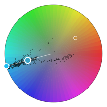
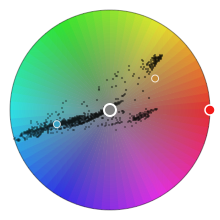
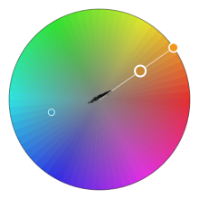

Color Grading
Tint the shadows, midtones and highlights separately: teal shadows and warm highlights for a film look, a cool cast for night, a sepia tone for black and white.
Color Grading presets
The Preset menu at the top of the panel sets every wheel (Shadows, Midtones, Highlights and Global) plus Blending and Balance at once. Nothing else on the photo changes. The menu shows the preset the panel matches, or Custom.
- Preview: open the menu and rest the pointer on a preset; the Navigator shows the photo with it.
- Apply: click it (one step in History). Then fine-tune the wheels as usual; the menu reads Custom.
- Save your own: Preset › Save Preset…. Your presets are listed under User Presets; Delete Preset removes one.
None clears all Color Grading. The built-ins keep saturation modest, so they are starting points: raise a wheel's Saturation for a stronger look. Monochrome Toning is made for Black & White photos.
Color harmony: what the groups mean
The groups are named after where their hues sit on the color wheel, the patterns painters and designers call color harmonies.
- Complementary
- Two hues opposite each other (teal and orange, blue and gold). The strongest contrast between warm and cool.
- Split complementary
- One hue plus the two either side of its opposite: softer than a straight complement.
- Analogous
- Neighboring hues (orange to yellow, teal to blue). Calm and unified; the most natural-looking.
- Triad
- Three hues evenly spaced, a triangle on the wheel. Lively; kept at low saturation so the tints don't fight.
- Monochrome
- One hue through every tone: classic toning such as sepia or cyanotype.
These are traditions from art and design, not rules of how we see. Studies of people's ratings find that colors with similar hues are judged most harmonious, and that complementary pairs are liked for their contrast rather than for harmony. Warm hues sit in the highlights or midtones in these presets because skin is orange; that keeps faces natural, which is why teal-and-orange works so often.
Beyond Lightroom. Lightroom has no Color Grading presets of its own; you save a Develop preset with only Color Grading ticked. That still works here (Presets), and is the way to save a grade together with a tone curve or HSL.
Reading a wheel
Each wheel is a circle of colors. The angle picks the hue (red at 3 o'clock, then yellow, green, cyan, blue and magenta going counterclockwise) and the distance from the center is how strong the tint is. The center is no tint at all.

1 2 3 4 5- The inner dot (hollow, filled with the tint it gives) sets hue and saturation together. Drag it.
- The rim dot sets the hue only. Drag it around the edge to change the color but keep the strength.
- The spoke runs from the center through the dot to the rim, so you can see the direction of the tint.
- The faint black dots are the colors in your photo that fall in this wheel's range (here, the shadows), like a small vectorscope. A cluster away from the center shows a color cast; as you move the inner dot, the cluster moves with it.
- The small ring is where another wheel's tint is (here, the warm Highlights tint), so you can line tints up or set them opposite.
Beyond Lightroom. The photo's color dots and the other wheels' rings aren't in Lightroom. They update as you edit.
Dragging, with modifier keys
| Drag the inner dot | Hue and saturation. It moves from where it is, so it never jumps under the pointer. |
| Click elsewhere on the wheel | Put the dot there. |
| Drag along the spoke | Changes only the strength: the hue holds until you move well off the line. |
| ⇧ drag | Saturation only. |
| ⌘ drag | Hue only. |
| ⌥ drag | Fine adjustment: moves at a tenth of the speed. |
| Double-click inside a wheel | Reset its hue and saturation. |
| Double-click a wheel's name | Reset the whole wheel, Luminance included. |
| ← → · ↑ ↓ | With the pointer over a wheel: turn the hue · change saturation. Add ⇧ for steps of 10. |
3-Way and single wheels
The row of buttons at the top of the panel picks the view. Atelier remembers it.


- View buttons: 3-Way, then one large wheel at a time for Shadows, Midtones, Highlights or Global (all tones). Double-click Adjust to reset all Color Grading.
- Color picker (eyedropper): see Color picker.
- In 3-Way, each wheel has a Luminance slider under it and its values (H · S · L) below. A single-wheel view has Hue, Saturation and Luminance sliders instead, where you can type exact numbers.
- Blending and Balance, with a graph of where each range applies: see below.
- The panel switch turns all Color Grading off to compare, keeping the settings. Every panel but Basic has one.
Luminance lightens or darkens that tonal range. It rolls off toward white and black instead of clipping: lightening the shadows lifts and tints the blacks, darkening the highlights tints the whites.
Global tints the whole photo, on top of the three ranges.
Blending and Balance
- Blending
- How much the three ranges overlap. Low gives distinct bands; high (the default is 50) blends them smoothly.
- Balance
- Moves the split between shadows and highlights. Negative gives the Shadows wheel more of the photo; positive gives Highlights more.
The graph under the sliders shows the three ranges from black (left) to white (right): blue for Shadows, gray for Midtones and yellow for Highlights. It reshapes as you move the sliders.
Hold ⌥ on Balance to see the photo painted in the three ranges' colors, so you can see exactly where the split falls. On Blending, ⌥ shows every wheel's tint at full strength. On a single wheel's Hue slider, ⌥ shows that tint at full strength.
Color picker: remove a color cast
- Click the eyedropper at the top right of the panel. The pointer becomes an eyedropper.
- Click a spot in the photo that should have no color: a gray wall, a white shirt in shadow.
- Atelier sets a wheel to the opposite tint, so that spot turns neutral. In 3-Way it picks Shadows, Midtones or Highlights by how bright the spot is; in a single-wheel view it sets that wheel. Esc cancels.
Beyond Lightroom. Lightroom's Color Grading has no picker. Use White Balance first for an overall cast; use this for a cast in just the shadows or just the highlights.
Compare and solo
- The switch in the panel header turns Color Grading off and on. The settings are kept (and exports, presets and history follow the switch).
- Press and hold the eye 👁 next to a wheel's name to see the photo graded by that wheel alone.
Right-click menu
Right-click a wheel for Reset Hue and Saturation, Reset Luminance, Reset (the whole wheel), Copy … Settings and Paste Settings to … (copy one wheel's tint to another), and Reset All Color Grading.